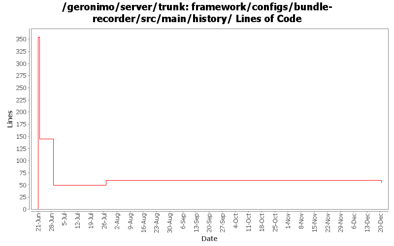

[root]/framework/configs/bundle-recorder/src/main/history

| Author | Changes | Lines of Code | Lines per Change |
|---|---|---|---|
| Totals | 5 (100.0%) | 367 (100.0%) | 73.4 |
| rwonly | 4 (80.0%) | 366 (99.7%) | 91.5 |
| djencks | 1 (20.0%) | 1 (0.3%) | 1.0 |
GERONIMO-6240 Make several base geronimo functions (kernel, deployer, etc) DS services and make the car-maven-plugin take advantage of that. Server assembly doesn't work yet, builds framework.
1 lines of code changed in 1 file:
GERONIMO-5764 some improvements of bundle recorder:
(1) use the logic in pluginInstallerGBean when install bundle, so that the Artifact could be calculated the same way, and also can convert a normal jar if the file is not an OSGi bundle.
(2) when delete an item in startup.properties, also delete the odd empty lines.
10 lines of code changed in 1 file:
GERONIMO-5764 record the bundles in startup.properties and add "deploy uninstall-bundle" cli
2 lines of code changed in 1 file:
GERONIMO-5764 fix the cyclic reference and add ASF license header
0 lines of code changed in 1 file:
GERONIMO-5764 Support Bundles Deployment
354 lines of code changed in 1 file: